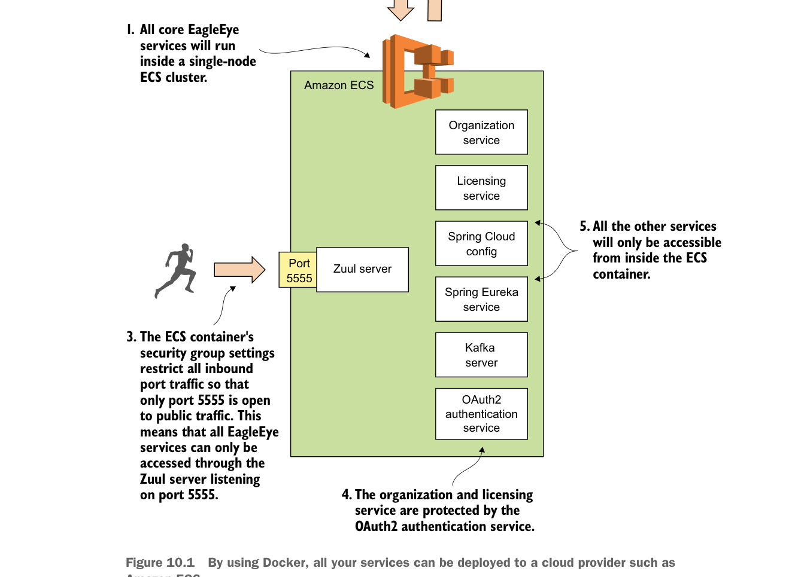

để chuyển từ hạ tầng do bạn sở hữu và quản lý sang hạ tầng được quản lý hoàn toàn bởi nhà cung cấp đám mây (trong trường hợp này là Amazon). Trong một triển khai thực tế, bạn thường sẽ triển khai hạ tầng cơ sở dữ liệu lên máy ảo trước khi triển khai lên container Docker.

Bằng cách dùng Docker, tất cả dịch vụ của bạn có thể được triển khai lên nhà cung cấp đám mây như Amazon ECS.
- Khác với triển khai trên máy desktop, bạn muốn mọi lưu lượng tới máy chủ đi qua cổng Zuul API của bạn. Bạn sẽ dùng nhóm bảo mật Amazon (security group) để chỉ cho phép cổng 5555 trên cluster ECS đã triển khai có thể truy cập từ bên ngoài.